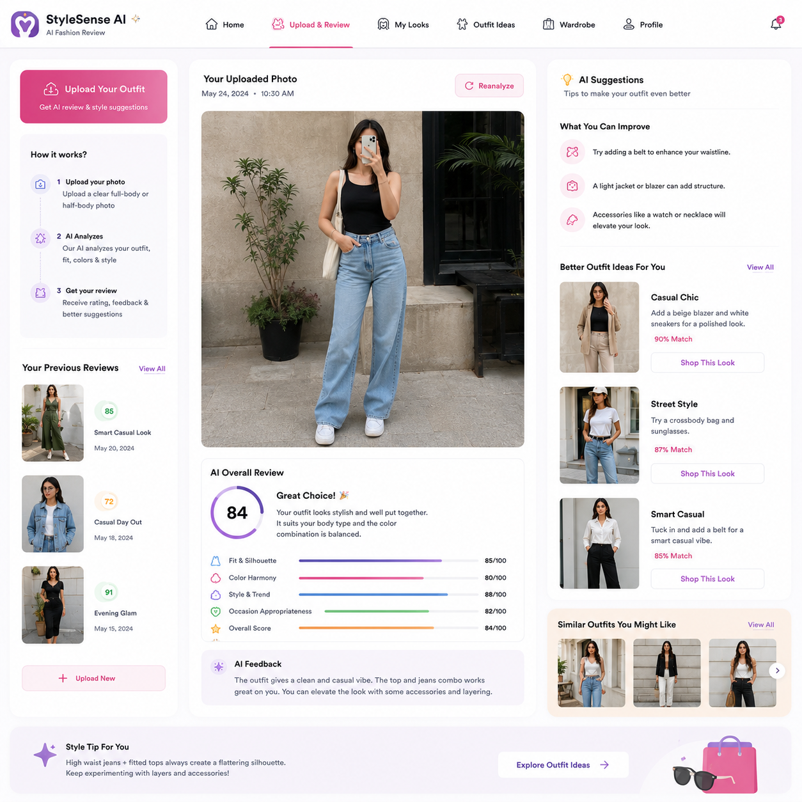
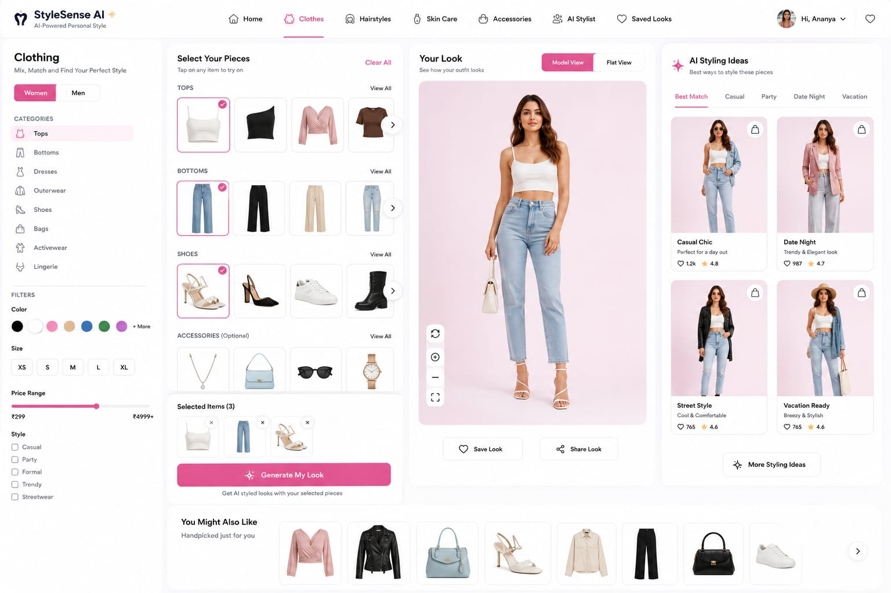

AI Outfit Review
Upload a photo of your outfit to get instant feedback on color harmony, accessories match, and silhouette correctness with a comprehensive style score.
Upload your photo and let AI become your personal fashion stylist for outfits, hairstyles, grooming, accessories, and fashion trends.
95/100 · Elite Fit
Zivra harnesses luxury styling intelligence to cover every vertical of your fashion and grooming life.
Upload a photo of your outfit to get instant feedback on color harmony, accessories match, and silhouette correctness with a comprehensive style score.
Digitize your closet, upload images of your clothes, and test combinations instantly on an AI model avatar before pulling them from your physical hangers.
Obtain customized advice for makeup tones, beard styles, skincare routines, and perfumes curated specifically for your profile settings and daily activities.
Identify hair types and face shapes through camera scanning to discover and test celebrity cuts that elevate your facial contours before booking your salon.
Connect with a passionate circle of fashion-forward minds on an Instagram-Pinterest style dashboard where you share outfits, ratings, and active discussions.
Track runway lines, global street styles, celebrity collections, and utilize Zivra’s predictive algorithms to wear colors and cuts before they go mainstream.

Unsure if your accessories blend with your shoes? Simply snap a photo before heading out. Zivra analyzes your outfit components to ensure style success.

Our virtual try-on engine projects apparel onto a customized digital twin model generated from your parameters. View fits dynamically from multiple perspectives.
Zivra changes styling perspectives. Read the reviews from our initial community members.
"Zivra acts like a high-fashion editor living inside my pocket. The color harmony reviews save me from mismatched items and make morning styling simple and rewarding."
 Alexandra Chen
Fashion Designer, NYC
Alexandra Chen
Fashion Designer, NYC
"The hair recommendation algorithm matched me with a haircut that actually fits my oval face shape. It completely took the anxiety out of talking to my barber."
 Marcus Thompson
Creative Director, London
Marcus Thompson
Creative Director, London
"Being able to try outfits virtually on my digital avatar has saved me thousands in returns. It's a game changer for online wardrobe curation."
 Elena Rostova
Style Influencer, Milan
Elena Rostova
Style Influencer, Milan
Find fast answers to common styling queries regarding Zivra's AI processes.
Zivra utilizes advanced vision transformer models trained on professional fashion datasets. Once you upload an image, the system parses colors, items, layers, and context (e.g., business formal, streetwear) to compare them with classic tailoring concepts and trending aesthetics.
Yes. Data privacy is a core principle. Your uploaded photos are processed securely using end-to-end encryption. They are solely used to run styling analysis for your account and are never shared or sold to third parties.
Absolutely! The Virtual Wardrobe lets you snapshot items in your closet. Our image segmentation software removes the background instantly and turns your clothes into digital layering items for your custom avatar.
Our face-shape parsing maps crucial facial keypoints (jawline angle, cheekbone width, forehead length ratio) to categorize face structures. Recommendations align with guidelines practiced by leading stylists and barbers worldwide.